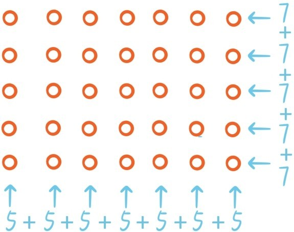
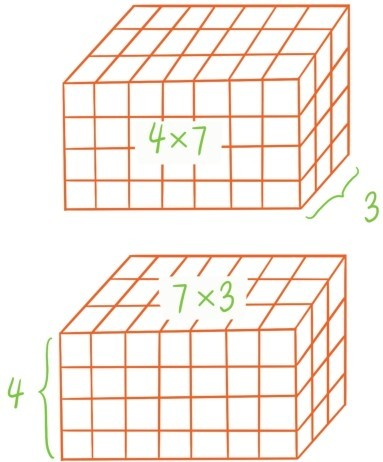
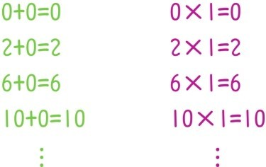
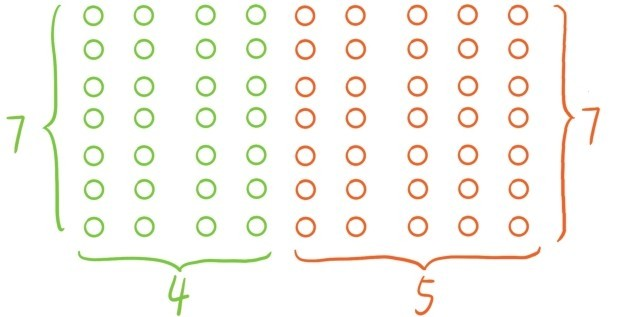
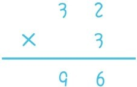

——数的运算的基本规律（下）
如果说加法交换律和结合律是明显成立的话，乘法交换律和结合律却并不简单。比如你能看出来为什么7×5=5×7吗？在第三节中讲过，乘法是由加法定义的，这个问题还原成加法问题就是，不做加法计算能否看出为什么
7+7+7+7+7=5+5+5+5+5+5+5
下面这个阵列图让这个问题一下子明朗了。

同样的道理可以说明12×13=13×12，21×4=4×21，143×329=329×143……由此我们总结出一个关于乘法的规律：把乘号左右两边的数调换后，乘法的结果不会改变。这个规律叫做乘法交换律。
解释乘法交换律用的是一个平面图形，现在为了解释乘法结合律，需要下面这个立体图形。

我们如果用上图所示的两种方式计算小正方体的个数，就会得到
(4×6)×3=4×(6×3)。
同样的道理可以说明(12×5)×8=12×(5×8)，(13×6)×52=13×(6×52)，(247×59)×101=247×(59×101)……由此又总结出一个关于乘法的规律：3个数相乘时，中间的数不论先和前面的数相乘，还是先和后面的数相乘，最终的结果都是一样的。这个规律叫做乘法结合律。
上一节我们说过，提炼加法交换律和结合律实质上就是提炼加法运算的精髓。现在从乘法运算中也提炼出了同样的精髓。所以，和上一节同样的道理可以说明，乘法实质上只有两种定律：乘法交换律和乘法结合律，其他一切“乘法定律”都可以由这两个定律衍生。也就是说，若干个数相乘时，不论以何种顺序相乘，最终的结果总是一样的。例如无需计算，就可以知道
[(4×6)×3]×2=(4×3)×(6×2)。
为了简便，引入指数运算表示若干个同样的数的乘积，例如：52表示5×5，读作5的2次方；113表示11×11×11，读作11的3次方；75表示7×7×7×7×7，读作7的5次方。2次方和3次方通常简称为平方和立方。例如2的平方和立方分别是4和8。
其实加法和乘法还有一个非常关键的共性，我们都知道每个数和0相加都不会变，同样地，每个数和1相乘也都不会变。

所以1在乘法中地位相当于0在加法中的地位。后面引入分数和引入负数的时候，加法和乘法的这种有趣的类比还会继续下去。
最后，我们来谈加法乘法分配律。分配律涉及的是这种类型的等式：(4+5)×7=4×7+5×7。(4+5)×7表示下面所有小圆圈的数量，其中绿色小圆圈数量是4×7，红色小圆圈数量是5×7。

所以无需计算，就知道这个等式是成立的。同样的道理，如果把7，4，5分别换成其他自然数等式仍然成立，比如，(19+2)×13=19×13+2×13，(24+6)×9=24×9+6×9，(643+538)×47=643×47+538×47……由这类等式抽象出来的运算规律称为加法乘法分配律。
在小学生经常做的乘法竖式计算中，分配律是不断地被使用，举个最简单的例子

这个竖式计算分解成等式就是
(30+2)×3=30×3+2×3=90+6
目前我们已经总结了5个运算定律，都是涉及加法或乘法，不涉及减法和除法，所以这里可能会有学生提出这种问题：
问题13：为什么只有加法和乘法的运算律，却没有减法和除法的运算律？
这个问题将在后面作答，包括运算律的重要性也要等到后面才会逐渐显示出来。现在我只能告诉你，这五大定律是数的家园的通行法则，任何数参与加减乘除运算都要遵循这些定律，否则它就不是一个“合格”的数。
提问时间
1.5.1 计算11的平方，5的立方，计算25。
1.5.2 请用运算定律推导出[(24×6)×13]×21=(24×13)×(6×21)。
1.5.3 请用运算定律推导出(24+6)×(25+3)=(24×25+6×25)+(3×24+3×6)。